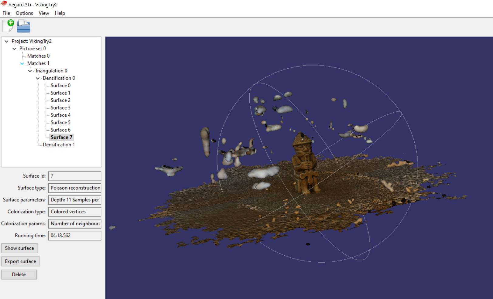

Project 3: 3D Scanning and printing
In this project I was supposed to use a design software to make something that could not be made subtractively, and 3D print my design with the constraints of maximum 4 hour printing time and the material available was 100g material. On top of that we were also supposed to try out 3D scanning. I started this project by searching on Google for cool 3D objects. I searched: "ideas for 3d printing" and I went on this website whose title was "50 Cool Things to 3D Print in January 2020". On this website I found this cool design of a pencil holder.


I decided to use this design as an inspiration. I used Fusion360 as my design software. I started by creating a box as big as I wanted my pencil holder to be. Then I started editing the box.

I used the fillet command to round the edges and created a sketch on the side of the box as can be seen as the blue surface.

In the sketch I used the spline command to create a curvy line on the box and then I extruded the material out.
Then I created a plane at an angle to be able to create a sketch on that plane. That way I could draw shapes at an angle with respect to my object.
Then I drew shapes on that sketch and used the extrude command in Fusion360 to cut those shapes into my object. I extruded them as far in as about 5 mm from the bottom.
Then I created more shapes into the same sketch as before.
Then I decided to select every area of the sketch excpect the areas that I wanted to become my pencil holders.

That way, when I extrude the area into my object its cuts out the material selected. That created this kind of design.

I also wanted to add slots for usb ports so I googled the typical size of a usb 3.0 port and I found it on this Wikipedia page. The width was given as 12 mm and the height as 4.5 mm. So I decided to create box shaped holes with the dimensions 15x7mm and I extruded those holes 30 mm into the object.
Now I was happy with my design. The next thing I did was went on the teachers website and into the homepage of Project 3. There I found a video made by Arnar, an assistant teacher in this class where he went over the basic steps of 3D printing in the application Ultimaker Cura. The video can be found here, but it is in Icelandic. Now I noticed that I did not know how to export my fusion360 design into a format that is 3D printable and is compatable with Ultimaker Cura. So I went to youtube and found a 5 minute tutorial that showed me how to save my object as a stl file and how to edit its properties. The video can be found here.
Now I saved my pencil holder design as a stl file

I imported the stl file into Ultimaker Cura simply by dragging the file into the application. I followed the instructions from Arnars video and set the printer up in those particular settings. When everything was ready I sliced my design to see how much material it used and the printing time.
I noticed that I was using two much material and the printing time was way too long!! So I decided to cut out some material from my object.
However the printing time was still too large! So I had to cut out even more material!

I made one last change to the design to make sure it was within the time constraints.


However, now I realized that my pencil holder would most likely not be able to stand and was a bit too short. Thats why I made the penchil holders longer and I decided to create a support.

I drew different shapes on these planes and used the loft command in Fusion to create a weird looking object
I then created a plane tangent to the bottom plate and cut the object with that plane.

Now my object was within the material limit but the printing time was a bit too long. However, since it is only a time constraint I got permission to do it.

I went to fablab and started 3D printing my pencil holder!
I am very pleased with the results!
Results
I learned a lot from this exercise! I never really understood the how 3D printing works and I didn't now how to use it. But after this exercise I know how to create objects that I can design! It is really cool. I learned how to set the settings on the printer, and how to make sure the printer would succeed in printing the object. Arnar's video was really helpful. The problems I encountered were staying within the material and time constraints and in the beginning my object would not have been able to stand on it's own. I fixed the constraints with a repetitive material deduction. I fixed the standing problem with my funny looking supports!The files
Press here to download the Fusion360 project!The 3D scanning
One month later I decided to get going on the 3D scanning part of project 3. I began by figuring out what object I wanted to 3D scan. I googled what kind of objects would be nice to 3D scan and the results were objects that had a lot of detail and not too much surface area. I decided to use this viking to 3D scan.I took 53 photos of this object in good lighting. I started by taking a front photo and then moving slowly around the object taking photos all along the way. Then I put them on my computer. Then I decided to figure out which 3D scanning software to use. I decided to use the software Regard3D because my good friend Aron recommended it and I also found nice reviews about it online. So I went to their website and downloaded the software. On their webiste you can access a step by step tutorial. I used this tutorial as a guide. But below I will describe the steps I took. When the software was downloaded, I launched it. I pressed the white blank page at the top left corner. That way I created a new project.
I named my project "Viking".
Then I pressed "Add picture set"
I selected all of the images I took of the object. Then I pressed compute matches.
After that I pressed triangulate. That creates a point cloud. It is rather hard to figure out the object from the point cloud.
Then you use the densification command. That creates a dense pointcloud and that makes out the object. The following dialog appears.
I saw in the tutorial from Regard3D that for small projects, users should deselect "Use visibility information (CMVS) because CMVS tends to generously throw away pictures. I did that and this was the result.
This is still only a point cloud. Next I wanted to generate a surface that connects most of these points. I selected the densification in the project tree and then I clicked on "Create Surface". The following dialog appears.
It was suggested to first use colored vertices to see the result of the surface reconstruction. If the result is not satisfying, users can create another surface using textures. I used the recommended settings.
After a short while I got the following result.
I exported the resulting surface as a .ply file. Then I put the surface into ultimaker cura. The results were not good.
The surface on top of the viking as well as the bottom was a problem. At this moment I realized that I did not take any photos from a top view and perhabs from lower views. And I was pretty sure that the lighting was a problem. I had an idea to retry taking photos of the object with only a white background. And I wanted to try to take more photos.
I took 174 photos of the Viking and now I also took photos from a top view and the results were much better! I took the exact same steps as I did previously.

However these black walls were becoming a problem from me. I could not put this file into a 3D printing software. So I decided to change some settings in the "create surface" step which is the last step. I also contacted my team member and assistant teacher Aron to get some help. He pointed out that by changing the "trim threshold" the program would trim out most of the boundaries because there werent as many matches there as on the object itself! And it worked great. I also found out that by increasing the depth I got a better resulting Viking. The details were much better.

If I would want to 3D print the Viking I would have to put this surface into a another software to get rid of the bubbles around the Viking, and after that it would be ready!
Results
I really liked how realistic the 3D scanned Viking came out! However it becomes a problem that the software puts the surroundings in as well. It would take a lot of work to trim all the surroundings out. And that is really the only big problem I encountered. I also read online that 3D scanning works best for smaller objects with preferably a lot of detail.The files
Press here to download the Regard3D project!The workload
- 18. February: 1 hour searcing online for ideas and designing
- 19. February: 3 hours completing the design and making sure its printing time and material is within the constraints
- 20. February: 1 hour updating the website
- 21. February: 2 hours updating the design
- 22. February: 2 hours updating the design
- 24. February: 1 hours updating the website
- 29. March: 2 hours starting on the 3D scanning part of the project
- 30. March: 30 minutes updating the website
- 2. April: 2 hours working on the 3D scannign project
- 15. April: 2 hours finishing the 3D scanning project
- 19. April: 30 minutes updating the website
- Total: 17 hours